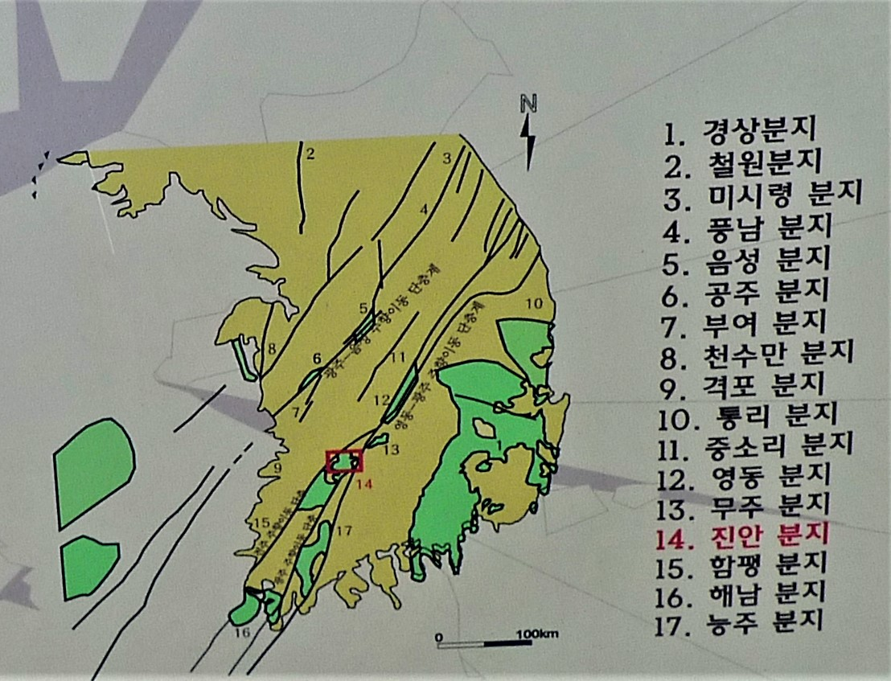

Introduction to the Mountains of Central Korea
One of the reasons to live in Korea, as I have since 2003, is the wonderful mountains of this country.
They are not spectacular like those found in Nepal, Europe or Alaska, but they have a wonderful variety
of shapes and the views are excellent. I have hiked the tallest mountains of Europe including the
Matterhorn and Mt. Blanc. I have also hiked all the high peaks of the Adirondacks in New England and
still find the mountains of Korea to be challenging, a pleasure to hike, and one is always rewarded by
the excellent views. Also, you are never far from the historical sights of Korea and most of the
Buddhist temples are located in the mountains. You are reminded of this around four in the morning and
six in the evening when the temple bells echo in the mountains. It is an amazing experience to hear the
beautiful sound of these large bells.
Brief word about the Geology of the Korean Mountains

This diagram shows the joint system of the Korean Peninsula. All the mountains (and rivers too) of Korea
are influenced by this series of joints (zones of weakness in the rocks caused by strain due to crustal
stress). These forces are described in the figure below that summarizes the geologic history of Korea.
In this case it is specifically centered on the history of the ManinSan. (만인산) area that is highlighted
by the red box in the above figure but is equally applicable to the general geological history of Korea.
This description included below discusses one aspect of this history. Note that the collision of India
with southern Asia influenced the geology of Korea and in fact was one factor that led to the uplift of
the Korean plateau.
Geological History

The writing to the right is produced by the National Park System of Korea and is found in the Maninsan
(만인산) National Park.
Bear with me as the above is one explanation of what you see when climbing in the mountains of Korea.
Now I will explain another very interesting aspect of the geological history. It is visible when you
stand on the top of any of the mountains. It is the fact that most of the mountains have a height
between 400 and 600 meters. This is a hint to their history. Another hint to their history is the
sinusoidal entrenched valley that many of the rivers have. Millions of years ago the land of Korea was
very flat. The geologic term for this a “peneplain”. This is a very flat surface where the rivers freely
roam without constraint and meander in “S” shaped channels across the flat land until they reach the
ocean. Presently there are locations on the earth that show this characteristic. One example is the
lower Mississippi River near where it enters the Gulf of Mexico. Then, around seventy million years ago,
the land of present-day Korea started to rise. When this happened, the streams started eroding their
channels into the ancient bedrock and the pattern they maintained was the original ancient “S” shaped
river channel. This is exhibited very well in the lake called Daechongho (대청호)), the water supply for
the city of Daejeon. This lake shows this classic “S” shape it had when the land was flat but it has
been exaggerated by the damming of the valley of the Geumgang (금강) River. There are also other
influences on the location and alignment of the mountains including lineaments and faults that the
rivers follow as illustrated on the above diagram (map).
Geum River (금강) River path
If you look at the map and follow the channel of the Geum River (금강) River (in red), you can see a long
stretch of the river that is very straight. This is where the river follows a zone of weakness, joint,
in the underlying rock. I remember canoeing this part of the river when travelling from Daejeon to
Gunsan (군산) and wondering when we would ever reach the end of this straight channel. It was a beautiful
part of the river with high mountains on each bank of the river, but, at the time, it seemed to go on
forever. When you hike in the mountains, think of these past events and the above long history when you
look over the mountains in the distance. With this understanding you can appreciate the mountainous
nature of the Korean Peninsula. Also realize that the collision of India with southern Asia affected the
Korean peninsula even though it seems very far away.